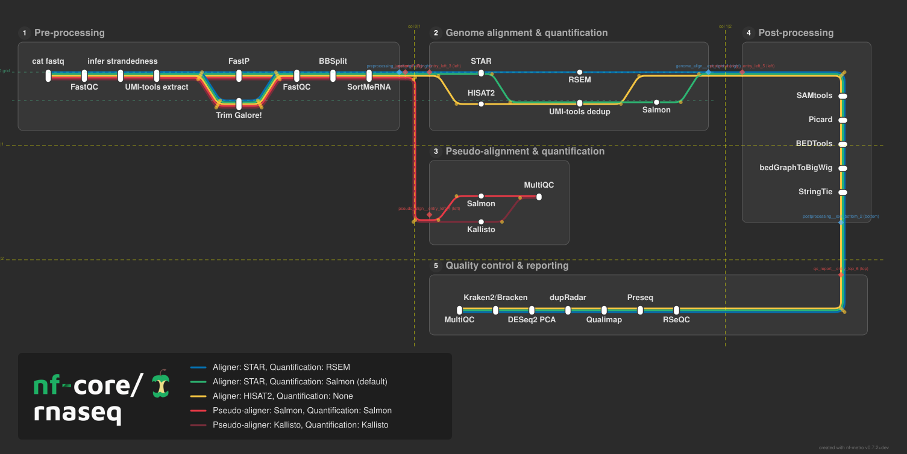
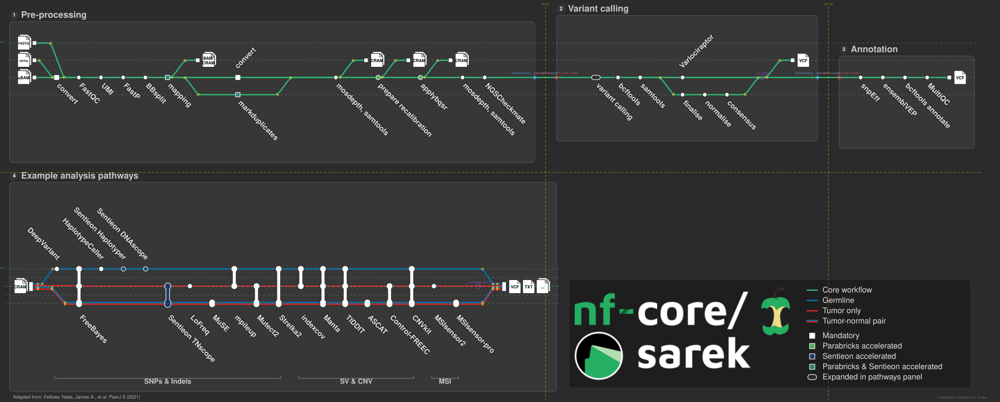
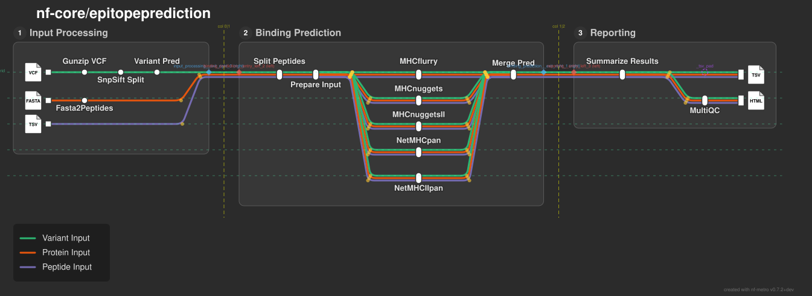
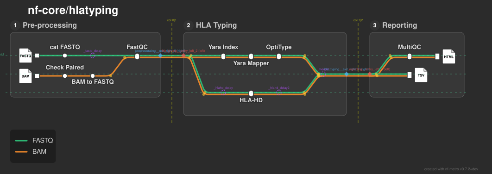
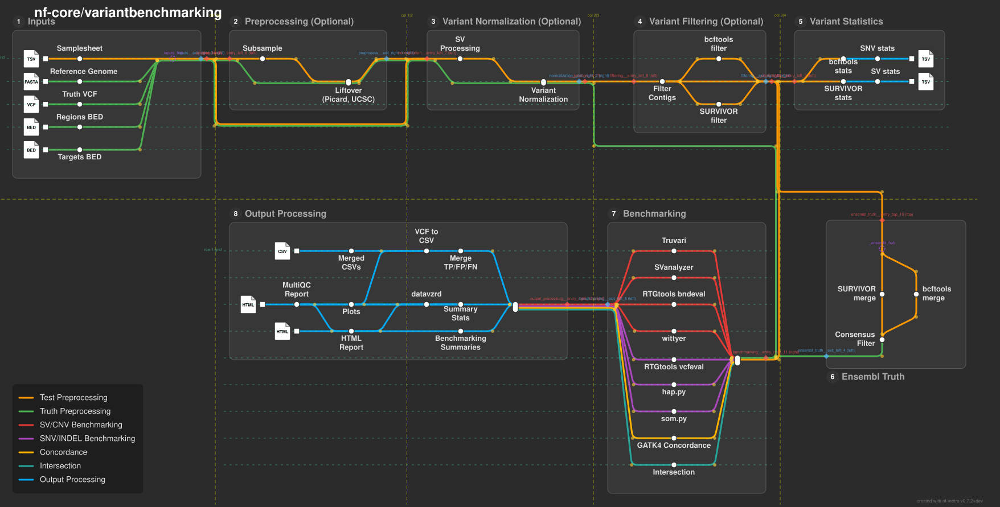

nf-core Pipelines¶
Real-world pipelines rendered with nf-metro. These are maintained as .mmd files alongside the pipeline source code and rendered automatically.
See the Gallery for layout pattern examples and the Guide for how to write your own.
nf-core/rnaseq¶
RNA-seq analysis with multiple aligner and quantification routes (STAR/RSEM, STAR/Salmon, HISAT2, Salmon pseudo-alignment, Kallisto).

Mermaid source
%%metro title: nf-core/rnaseq
%%metro logo: examples/nf-core-rnaseq_logo_dark.png
%%metro style: dark
%%metro line: star_rsem | Aligner: STAR, Quantification: RSEM | #0570b0
%%metro line: star_salmon | Aligner: STAR, Quantification: Salmon (default) | #2db572
%%metro line: hisat2 | Aligner: HISAT2, Quantification: None | #f5c542
%%metro line: pseudo_salmon | Pseudo-aligner: Salmon, Quantification: Salmon | #e63946
%%metro line: pseudo_kallisto | Pseudo-aligner: Kallisto, Quantification: Kallisto | #7b2d3b
%%metro legend: bl
graph LR
subgraph preprocessing [Pre-processing]
cat_fastq[cat fastq]
fastqc_raw[FastQC]
infer_strandedness[infer strandedness]
umi_tools_extract[UMI-tools extract]
fastp[FastP]
trimgalore[Trim Galore!]
fastqc_trimmed[FastQC]
bbsplit[BBSplit]
sortmerna[SortMeRNA]
cat_fastq -->|star_salmon,star_rsem,hisat2,pseudo_salmon,pseudo_kallisto| fastqc_raw
fastqc_raw -->|star_salmon,star_rsem,hisat2,pseudo_salmon,pseudo_kallisto| infer_strandedness
infer_strandedness -->|star_salmon,star_rsem,hisat2,pseudo_salmon,pseudo_kallisto| umi_tools_extract
umi_tools_extract -->|star_salmon,star_rsem,hisat2,pseudo_salmon,pseudo_kallisto| fastp
umi_tools_extract -->|star_salmon,star_rsem,hisat2,pseudo_salmon,pseudo_kallisto| trimgalore
fastp -->|star_salmon,star_rsem,hisat2,pseudo_salmon,pseudo_kallisto| fastqc_trimmed
trimgalore -->|star_salmon,star_rsem,hisat2,pseudo_salmon,pseudo_kallisto| fastqc_trimmed
fastqc_trimmed -->|star_salmon,star_rsem,hisat2,pseudo_salmon,pseudo_kallisto| bbsplit
bbsplit -->|star_salmon,star_rsem,hisat2,pseudo_salmon,pseudo_kallisto| sortmerna
end
subgraph genome_align [Genome alignment & quantification]
star[STAR]
hisat2_align[HISAT2]
rsem[RSEM]
salmon_quant[Salmon]
umi_tools_dedup[UMI-tools dedup]
star -->|star_rsem| rsem
star -->|star_salmon| umi_tools_dedup
umi_tools_dedup -->|star_salmon| salmon_quant
hisat2_align -->|hisat2| umi_tools_dedup
end
subgraph postprocessing [Post-processing]
samtools[SAMtools]
picard[Picard]
bedtools[BEDTools]
bedgraph[bedGraphToBigWig]
stringtie[StringTie]
samtools -->|star_salmon,star_rsem,hisat2| picard
picard -->|star_salmon,star_rsem,hisat2| bedtools
bedtools -->|star_salmon,star_rsem,hisat2| bedgraph
bedgraph -->|star_salmon,star_rsem,hisat2| stringtie
end
subgraph pseudo_align [Pseudo-alignment & quantification]
salmon_pseudo[Salmon]
kallisto[Kallisto]
multiqc_pseudo[MultiQC]
salmon_pseudo -->|pseudo_salmon| multiqc_pseudo
kallisto -->|pseudo_kallisto| multiqc_pseudo
end
subgraph qc_report [Quality control & reporting]
rseqc[RSeQC]
preseq[Preseq]
qualimap[Qualimap]
dupradar[dupRadar]
deseq2_pca[DESeq2 PCA]
kraken2[Kraken2/Bracken]
multiqc_final[MultiQC]
rseqc -->|star_salmon,star_rsem,hisat2| preseq
preseq -->|star_salmon,star_rsem,hisat2| qualimap
qualimap -->|star_salmon,star_rsem,hisat2| dupradar
dupradar -->|star_salmon,star_rsem,hisat2| deseq2_pca
deseq2_pca -->|star_salmon,star_rsem,hisat2| kraken2
kraken2 -->|star_salmon,star_rsem,hisat2| multiqc_final
end
%% Inter-section edges
sortmerna -->|star_salmon,star_rsem| star
sortmerna -->|hisat2| hisat2_align
sortmerna -->|pseudo_salmon| salmon_pseudo
sortmerna -->|pseudo_kallisto| kallisto
salmon_quant -->|star_salmon| samtools
rsem -->|star_rsem| samtools
umi_tools_dedup -->|hisat2| samtools
stringtie -->|star_salmon,star_rsem,hisat2| rseqc
nf-core/sarek¶
Germline and somatic variant calling, covering germline, tumor-only, and tumor-normal paired analysis through SNP/indel, SV/CNV, and MSI callers with downstream variant annotation.

Mermaid source
%%metro title: Example analysis pathways
%%metro caption: Adapted from: Fellows Yates, James A., et al. PeerJ 9 (2021)
%%metro style: dark
%%metro logo: examples/nf-core-sarek_logo_dark.png
%%metro logo_scale: 1.0
%%metro font_scale: 1.3
%%metro legend_logo_gap: 40
%%metro legend: br
%%metro label_angle: 45
%%metro line_spread: rails | calling
%%metro grid: preprocessing | 0,0
%%metro grid: variantcalling | 1,0
%%metro grid: annotation | 2,0
%%metro grid: calling | 0,1,1,3
%%metro line: core | Core workflow | #2db572
%%metro line: germline | Germline | #0570b0
%%metro line: tumor_only | Tumor only | #d62728
%%metro line: pair_n | Tumor-normal (normal) | #0570b0
%%metro line: pair_t | Tumor-normal (tumor) | #d62728
%% Tumor-normal pair is the normal + tumor lines bundled together; give the
%% combination a single legend entry instead of two separate rows.
%%metro legend_combo: pair_n, pair_t | Tumor-normal pair
%%metro files: ubam_in | uBAM
%%metro files: spring_in | spring
%%metro files: fastq_in | FASTQ
%%metro file: vcf_ann | VCF
%%metro file: vcf_vc | VCF
%%metro files: cram_call | CRAM
%%metro file: out | VCF
%%metro file: out | TXT
%%metro files: out | ...
%% Intermediate alignment artefacts written off the trunk at the step that
%% produces them (mapping, samtools, recalibration prep, applybqsr).
%%metro files: mapped_out | BAM/CRAM
%%metro files: samtools_out | CRAM
%%metro files: recalprep_out | CRAM
%%metro files: recal_out | CRAM
%% ubam and spring need conversion, so they feed convert; fastq is already in
%% the right format and joins the trunk at FastQC, past convert. spring and
%% fastq lift off the trunk as off-track inputs with an S-curve. The bam/cram
%% outputs hang off their producer the same way (off_track anchors a sink to
%% its source).
%%metro off_track: fastq_in
%%metro off_track: spring_in
%%metro off_track: mapped_out
%%metro off_track: samtools_out
%%metro off_track: recalprep_out
%%metro off_track: recal_out
%%metro off_track: vcf_vc
%% Marker key. Optional steps use the standard station pill (undistinguished);
%% only mandatory / accelerated steps get a marker shape. Acceleration is shown
%% by fill colour: Parabricks (green), Sentieon (navy), or both (teal) on
%% whatever shape the step already carries.
%%metro marker_legend: square, solid | Mandatory
%%metro marker_legend: square, #4CAF50 | Parabricks accelerated
%%metro marker_legend: square, #1b3a6b | Sentieon accelerated
%%metro marker_legend: square, #2f7f74 | Parabricks & Sentieon accelerated
%%metro marker_legend: pill, open | Expanded in pathways panel
%% Caller families along the pathways trunk.
%%metro group: SNPs & Indels | deepvariant, freebayes, haplotypecaller, haplotyper, dnascope, tnscope, lofreq, muse, mpileup, mutect2, strelka2
%%metro group: SV & CNV | indexcov, manta, tiddit, ascat, controlfreec, cnvkit
%%metro group: MSI | msisensor2, msisensorpro
%% --- markers: mandatory steps get a square; acceleration is the fill colour.
%% mapping and markduplicates are accelerable by both Parabricks and Sentieon
%% (teal); the BQSR steps are Parabricks-only (green); the Sentieon callers in
%% the pathways panel are Sentieon-only (navy).
%%metro marker: convert | square, solid
%%metro marker: bam_convert | square, solid
%%metro marker: mapping | square, #2f7f74
%%metro marker: markduplicates | square, #2f7f74
%%metro marker: prepare_recal | circle, #4CAF50
%%metro marker: applybqsr | circle, #4CAF50
%%metro marker: vc_anchor | pill, open
%% Sentieon-accelerated callers in the pathways panel (navy circles). Single-rail
%% callers (haplotyper, dnascope) show the marker; tnscope spans two rails and
%% renders as a plain interchange (a marker on a spanning rail station is drawn
%% as the interchange bar, not the glyph).
%%metro marker: haplotyper | circle, #1b3a6b
%%metro marker: dnascope | circle, #1b3a6b
%%metro marker: tnscope | circle, #1b3a6b
graph LR
subgraph preprocessing [Pre-processing]
ubam_in[ ]
spring_in[ ]
fastq_in[ ]
convert[convert]
fastqc[FastQC]
umi[UMI]
fastp[FastP]
bbsplit[BBsplit]
mapping[mapping]
bam_convert[convert]
markduplicates[markduplicates]
mosdepth[mosdepth, samtools]
prepare_recal[prepare recalibration]
applybqsr[applybqsr]
mosdepth_qc[mosdepth, samtools]
ngscheckmate[NGSCheckmate]
mapped_out[ ]
samtools_out[ ]
recalprep_out[ ]
recal_out[ ]
ubam_in -->|core| convert
spring_in -->|core| convert
fastq_in -->|core| fastqc
convert -->|core| fastqc
fastqc -->|core| umi
umi -->|core| fastp
fastp -->|core| bbsplit
bbsplit -->|core| mapping
mapping -->|core| bam_convert
mapping -->|core| markduplicates
bam_convert -->|core| mosdepth
markduplicates -->|core| mosdepth
mosdepth -->|core| prepare_recal
prepare_recal -->|core| applybqsr
applybqsr -->|core| mosdepth_qc
mosdepth_qc -->|core| ngscheckmate
mapping -->|core| mapped_out
mosdepth -->|core| samtools_out
prepare_recal -->|core| recalprep_out
applybqsr -->|core| recal_out
end
subgraph variantcalling [Variant calling]
vc_anchor[variant calling]
bcftools[bcftools]
samtools_vc[samtools]
varlociraptor[Varlociraptor]
finalise[finalise]
normalise[normalise]
consensus[consensus]
_vc_merge[ ]
vcf_vc[ ]
vc_anchor -->|core| bcftools
bcftools -->|core| samtools_vc
samtools_vc -->|core| varlociraptor
samtools_vc -->|core| finalise
finalise -->|core| normalise
normalise -->|core| consensus
varlociraptor -->|core| _vc_merge
consensus -->|core| _vc_merge
_vc_merge -->|core| vcf_vc
end
subgraph annotation [Annotation]
snpeff[snpEff]
ensemblvep[ensemblVEP]
bcftools_annotate[bcftools annotate]
multiqc[MultiQC]
vcf_ann[ ]
snpeff -->|core| ensemblvep
ensemblvep -->|core| bcftools_annotate
bcftools_annotate -->|core| multiqc
multiqc -->|core| vcf_ann
end
subgraph calling [Example analysis pathways]
cram_call[ ]
deepvariant[DeepVariant]
freebayes[FreeBayes]
haplotypecaller[HaplotypeCaller]
haplotyper[Sentieon Haplotyper]
dnascope[Sentieon DNAscope]
tnscope[Sentieon TNscope]
lofreq[LoFreq]
muse[MuSE]
mpileup[mpileup]
mutect2[Mutect2]
strelka2[Strelka2]
indexcov[indexcov]
manta[Manta]
tiddit[TIDDIT]
ascat[ASCAT]
controlfreec[Control-FREEC]
cnvkit[CNVkit]
msisensor2[MSIsensor2]
msisensorpro[MSIsensor-pro]
out[ ]
%% Germline route (top rail): deepvariant, haplotypecaller, haplotyper,
%% dnascope are germline-only; freebayes/mpileup/strelka2/manta/tiddit/
%% cnvkit/indexcov are shared.
cram_call -->|germline| deepvariant
deepvariant -->|germline| freebayes
freebayes -->|germline| haplotypecaller
haplotypecaller -->|germline| haplotyper
haplotyper -->|germline| dnascope
dnascope -->|germline| mpileup
mpileup -->|germline| strelka2
strelka2 -->|germline| indexcov
indexcov -->|germline| manta
manta -->|germline| tiddit
tiddit -->|germline| cnvkit
cnvkit -->|germline| out
%% Tumour-only route (middle rail): tnscope, lofreq, mutect2, msisensor2
%% join here; mpileup/indexcov run tumour but not the combined pair.
cram_call -->|tumor_only| freebayes
freebayes -->|tumor_only| tnscope
tnscope -->|tumor_only| lofreq
lofreq -->|tumor_only| mpileup
mpileup -->|tumor_only| mutect2
mutect2 -->|tumor_only| indexcov
indexcov -->|tumor_only| manta
manta -->|tumor_only| tiddit
tiddit -->|tumor_only| controlfreec
controlfreec -->|tumor_only| cnvkit
cnvkit -->|tumor_only| msisensor2
msisensor2 -->|tumor_only| out
%% Tumour-normal pair route (bottom rail): muse, ascat, msisensorpro are
%% combined-only; strelka2 runs germline + combined (not tumour-only).
cram_call -->|pair_n,pair_t| freebayes
freebayes -->|pair_n,pair_t| tnscope
tnscope -->|pair_n,pair_t| muse
muse -->|pair_n,pair_t| mutect2
mutect2 -->|pair_n,pair_t| strelka2
strelka2 -->|pair_n,pair_t| manta
manta -->|pair_n,pair_t| tiddit
tiddit -->|pair_n,pair_t| ascat
ascat -->|pair_n,pair_t| controlfreec
controlfreec -->|pair_n,pair_t| cnvkit
cnvkit -->|pair_n,pair_t| msisensorpro
msisensorpro -->|pair_n,pair_t| out
end
%% Inter-section: core workflow flows through the top three sections.
ngscheckmate -->|core| vc_anchor
_vc_merge -->|core| snpeff
nf-core/epitopeprediction¶
MHC binding prediction from VCF, protein FASTA, or peptide TSV inputs through five prediction tools.

Mermaid source
%%metro title: nf-core/epitopeprediction
%%metro style: dark
%%metro line_order: span
%%metro logo: docs/images/nf-core-epitopeprediction_logo_dark.png
%%metro legend: bl
%%metro line: vcf | Variant Input | #2db572
%%metro line: protein | Protein Input | #e6550d
%%metro line: peptide | Peptide Input | #756bb1
%%metro file: VCF_IN | VCF
%%metro file: FASTA_IN | FASTA
%%metro file: TSV_IN | TSV
%%metro file: TSV_OUT | TSV
%%metro file: HTML_OUT | HTML
graph LR
subgraph input_processing [Input Processing]
VCF_IN[ ]
gunzip_vcf([Gunzip VCF])
snpsift_split([SnpSift Split])
variant_pred([Variant Pred])
FASTA_IN[ ]
fasta2peptides([Fasta2Peptides])
TSV_IN[ ]
VCF_IN -->|vcf| gunzip_vcf
gunzip_vcf -->|vcf| snpsift_split
snpsift_split -->|vcf| variant_pred
FASTA_IN -->|protein| fasta2peptides
end
subgraph binding_prediction [Binding Prediction]
split_peptides([Split Peptides])
prepare_input([Prepare Input])
mhcflurry([MHCflurry])
mhcnuggets([MHCnuggets])
mhcnuggetsii([MHCnuggetsII])
netmhcpan([NetMHCpan])
netmhciipan([NetMHCIIpan])
merge_pred([Merge Pred])
split_peptides -->|vcf,protein,peptide| prepare_input
prepare_input -->|vcf,protein,peptide| mhcflurry
prepare_input -->|vcf,protein,peptide| mhcnuggets
prepare_input -->|vcf,protein,peptide| mhcnuggetsii
prepare_input -->|vcf,protein,peptide| netmhcpan
prepare_input -->|vcf,protein,peptide| netmhciipan
mhcflurry -->|vcf,protein,peptide| merge_pred
mhcnuggets -->|vcf,protein,peptide| merge_pred
mhcnuggetsii -->|vcf,protein,peptide| merge_pred
netmhcpan -->|vcf,protein,peptide| merge_pred
netmhciipan -->|vcf,protein,peptide| merge_pred
end
subgraph reporting [Reporting]
summarize([Summarize Results])
_tsv_pad[ ]
multiqc([MultiQC])
TSV_OUT[ ]
HTML_OUT[ ]
summarize -->|vcf,protein,peptide| _tsv_pad
summarize -->|vcf,protein,peptide| multiqc
_tsv_pad -->|vcf,protein,peptide| TSV_OUT
multiqc -->|vcf,protein,peptide| HTML_OUT
end
%% Inter-section edges
variant_pred -->|vcf| split_peptides
fasta2peptides -->|protein| split_peptides
TSV_IN -->|peptide| split_peptides
merge_pred -->|vcf,protein,peptide| summarize
nf-core/hlatyping¶
HLA typing from FASTQ or BAM inputs via OptiType and HLA-HD.

Mermaid source
%%metro title: nf-core/hlatyping
%%metro style: dark
%%metro logo: docs/images/nf-core-hlatyping_logo_dark.png
%%metro file: fastq_in | FASTQ
%%metro file: bam_in | BAM
%%metro file: report_tsv | TSV
%%metro file: report_html | HTML
%%metro line: fastq | FASTQ | #2db572
%%metro line: bam | BAM | #e6842a
%%metro legend: bl
graph LR
subgraph preprocessing [Pre-processing]
%%metro exit: right | fastq, bam
fastq_in[ ]
bam_in[ ]
cat_fastq[cat FASTQ]
_fastq_delay[ ]
check_paired[Check Paired]
collatefastq[BAM to FASTQ]
fastqc[FastQC]
fastq_in -->|fastq| cat_fastq
cat_fastq -->|fastq| _fastq_delay
_fastq_delay -->|fastq| fastqc
bam_in -->|bam| check_paired
check_paired -->|bam| collatefastq
collatefastq -->|bam| fastqc
end
subgraph hla_typing [HLA Typing]
%%metro entry: left | fastq, bam
%%metro exit: right | fastq, bam
yara_index[Yara Index]
yara_mapper[Yara Mapper]
optitype_run[OptiType]
_hlahd_delay[ ]
hlahd_run[HLA-HD]
_hlahd_delay2[ ]
_merge1[ ]
yara_index -->|fastq,bam| yara_mapper
yara_mapper -->|fastq,bam| optitype_run
optitype_run -->|fastq,bam| _merge1
_hlahd_delay -->|fastq,bam| hlahd_run
hlahd_run -->|fastq,bam| _hlahd_delay2
_hlahd_delay2 -->|fastq,bam| _merge1
end
subgraph reporting [Reporting]
%%metro entry: left | fastq, bam
report_tsv[ ]
multiqc[MultiQC]
report_html[ ]
multiqc -->|fastq,bam| report_html
end
%% Inter-section edges
fastqc -->|fastq,bam| yara_index
fastqc -->|fastq,bam| _hlahd_delay
_merge1 -->|fastq,bam| report_tsv
_merge1 -->|fastq,bam| multiqc
nf-core/variantprioritization¶
Somatic and germline variant prioritization using PCGR and CPSR.

Mermaid source
%%metro title: nf-core/variantprioritization
%%metro file: cna_in | CNA
%%metro file: vcf_in | VCF
%%metro file: report_pcgr | HTML
%%metro file: report_cpsr | HTML
%%metro line: somatic | Somatic | #4CAF50
%%metro line: germline | Germline | #9923A0
%%metro line: reference | Reference | #2196F3
graph LR
subgraph preprocessing [Pre-processing of vcf files]
vcf_in[ ]
tabix[tabix]
bcftools_norm[bcftools/norm]
bcftools_filter[bcftools/filter]
vcf_in -->|somatic,germline| tabix
tabix -->|somatic,germline| bcftools_norm
bcftools_norm -->|somatic,germline| bcftools_filter
end
subgraph format_files [Prepare files for PCGR]
reformat_vcf[Reformat VCF]
intersect[Intersect VCF]
prepare_pcgr[Prepare VCF]
cna_in[ ]
reformat_cna[Reformat CNA]
reformat_vcf -->|somatic| intersect
reformat_vcf -->|somatic| prepare_pcgr
intersect -->|somatic| prepare_pcgr
cna_in -->|somatic| reformat_cna
end
subgraph get_reference [Reference]
get_pcgr[PCGR DB]
get_vep[VEP Cache]
end
subgraph run_pcgr [PCGR]
pcgr[PCGR]
report_pcgr[ ]
pcgr -->|somatic| report_pcgr
end
subgraph run_cpsr [CPSR]
cpsr[CPSR]
report_cpsr[ ]
cpsr -->|germline| report_cpsr
end
%% Inter-section edges
get_pcgr -->|reference| cpsr
get_vep -->|reference| cpsr
bcftools_filter -->|germline| cpsr
bcftools_filter -->|somatic| reformat_vcf
reformat_cna -->|somatic| pcgr
prepare_pcgr -->|somatic| pcgr
get_pcgr -->|reference| pcgr
get_vep -->|reference| pcgr
nf-core/variantbenchmarking¶
Benchmarking of variant callers against truth sets with Truvari, hap.py, RTGtools, and more.

Mermaid source
%%metro title: nf-core/variantbenchmarking
%%metro style: dark
%%metro line_order: span
%%metro legend: bl
%%metro compact_offsets: true
%%metro grid: inputs | 0,0
%%metro grid: preprocess | 1,0
%%metro grid: normalization | 2,0
%%metro grid: filtering | 3,0
%%metro grid: stats | 4,0
%%metro grid: benchmarking | 3,1
%%metro grid: ensembl_truth | 4,1
%%metro grid: output_processing | 1,1,1,2
%%metro file: ref_genome_file | FASTA
%%metro file: truth_vcf_file | VCF
%%metro file: regions_bed_file | BED
%%metro file: targets_bed_file | BED
%%metro file: samplesheet_file | TSV
%%metro file: snv_stats_out | TSV
%%metro file: sv_stats_out | TSV
%%metro file: merged_csvs_out | CSV
%%metro file: html_report_out | HTML
%%metro file: multiqc_out | HTML
%%metro line: truth | Truth Preprocessing | #4CAF50
%%metro line: test | Test Preprocessing | #ff9800
%%metro line: sv_cnv | SV/CNV Benchmarking | #E53935
%%metro line: snv_indel | SNV/INDEL Benchmarking | #AB47BC
%%metro line: concordance | Concordance | #FFB300
%%metro line: intersection | Intersection | #26A69A
%%metro line: output | Output Processing | #03A9F4
graph LR
subgraph inputs [Inputs]
%%metro exit: right | truth, test
ref_genome_file[ ]
ref_genome[Reference Genome]
truth_vcf_file[ ]
truth_vcf[Truth VCF]
regions_bed_file[ ]
regions_bed[Regions BED]
targets_bed_file[ ]
targets_bed[Targets BED]
samplesheet_file[ ]
samplesheet[Samplesheet]
_inputs_hub[hidden]
ref_genome_file -->|truth| ref_genome
truth_vcf_file -->|truth| truth_vcf
regions_bed_file -->|truth| regions_bed
targets_bed_file -->|truth| targets_bed
samplesheet_file -->|test| samplesheet
ref_genome -->|truth| _inputs_hub
truth_vcf -->|truth| _inputs_hub
regions_bed -->|truth| _inputs_hub
targets_bed -->|truth| _inputs_hub
samplesheet -->|test| _inputs_hub
end
subgraph preprocess ["Preprocessing (Optional)"]
%%metro entry: left | truth, test
%%metro exit: right | truth, test
subsample[Subsample]
liftover["Liftover\n(Picard, UCSC)"]
subsample -->|test| liftover
end
subgraph normalization ["Variant Normalization (Optional)"]
%%metro entry: left | truth, test
%%metro exit: right | truth, test
sv_processing[SV\nProcessing]
var_norm[Variant\nNormalization]
sv_processing -->|test| var_norm
end
subgraph filtering ["Variant Filtering (Optional)"]
%%metro entry: left | test
%%metro exit: right | test
filter_contigs[Filter\nContigs]
bcftools_filter[bcftools\nfilter]
survivor_filter[SURVIVOR\nfilter]
filter_contigs -->|test| bcftools_filter
filter_contigs -->|test| survivor_filter
end
subgraph ensembl_truth [Ensembl Truth]
%%metro direction: TB
%%metro entry: top | test
%%metro exit: left | truth
_ensembl_hub[hidden]
survivor_merge[SURVIVOR\nmerge]
bcftools_merge[bcftools\nmerge]
consensus_filter[Consensus\nFilter]
_ensembl_hub -->|test| survivor_merge
_ensembl_hub -->|test| bcftools_merge
survivor_merge -->|test| consensus_filter
bcftools_merge -->|test| consensus_filter
end
subgraph benchmarking [Benchmarking]
%%metro direction: RL
%%metro entry: top | test, truth
%%metro entry: right | test, truth
bench_hub[ ]
truvari[Truvari]
rtg_vcfeval[RTGtools vcfeval]
svanalyzer[SVanalyzer]
rtg_bndeval[RTGtools bndeval]
happy[hap.py]
wittyer[wittyer]
sompy[som.py]
intersection_tool[Intersection]
gatk4_conc[GATK4 Concordance]
bench_hub -->|sv_cnv| truvari
bench_hub -->|snv_indel| rtg_vcfeval
bench_hub -->|sv_cnv| svanalyzer
bench_hub -->|sv_cnv| rtg_bndeval
bench_hub -->|snv_indel| happy
bench_hub -->|sv_cnv| wittyer
bench_hub -->|snv_indel| sompy
bench_hub -->|intersection| intersection_tool
bench_hub -->|concordance| gatk4_conc
%%metro exit: left | sv_cnv, snv_indel, concordance, intersection
end
subgraph output_processing [Output Processing]
%%metro direction: RL
%%metro entry: right | sv_cnv, snv_indel, concordance, intersection
results_hub[ ]
merge_res[Merge\nTP/FP/FN]
vcf2csv[VCF to\nCSV]
sum_stats[Summary\nStats]
plots[Plots]
datavzrd_tool[datavzrd]
merged_csvs[Merged\nCSVs]
merged_csvs_out[ ]
bench_summaries[Benchmarking\nSummaries]
html_report[HTML\nReport]
html_report_out[ ]
multiqc[MultiQC\nReport]
multiqc_out[ ]
results_hub -->|output| merge_res
merge_res -->|output| vcf2csv
results_hub -->|output| sum_stats
sum_stats -->|output| plots
sum_stats -->|output| datavzrd_tool
vcf2csv -->|output| plots
vcf2csv -->|output| merged_csvs
merged_csvs -->|output| merged_csvs_out
results_hub -->|output| bench_summaries
datavzrd_tool -->|output| html_report
html_report -->|output| html_report_out
sum_stats -->|output| multiqc
bench_summaries -->|output| multiqc
plots -->|output| multiqc
multiqc -->|output| multiqc_out
end
subgraph stats [Variant Statistics]
%%metro entry: left | test
%%metro exit: right | test, output
bcftools_stats[bcftools\nstats]
survivor_stats[SURVIVOR\nstats]
snv_stats[SNV stats]
sv_stats[SV stats]
snv_stats_out[ ]
sv_stats_out[ ]
bcftools_stats -->|output| snv_stats
survivor_stats -->|output| sv_stats
snv_stats -->|output| snv_stats_out
sv_stats -->|output| sv_stats_out
end
%% Section 1 -> 2: test through Subsample, truth to Liftover
_inputs_hub -->|test| subsample
_inputs_hub -->|truth| liftover
%% Section 2 -> 3: test to SV Processing, truth to Var Norm
liftover -->|test| sv_processing
liftover -->|truth| var_norm
%% Section 1 -> 3 (bypass section 2)
_inputs_hub -->|test| sv_processing
_inputs_hub -->|truth| var_norm
%% Section 3 -> 4
var_norm -->|test| filter_contigs
%% Section 4 -> 5: each filter to its corresponding stats
bcftools_filter -->|test| bcftools_stats
survivor_filter -->|test| survivor_stats
%% Section 4 -> Ensembl Truth
bcftools_filter -->|test| _ensembl_hub
survivor_filter -->|test| _ensembl_hub
%% Multiple sections -> Benchmarking
filter_contigs -->|test| bench_hub
var_norm -->|truth| bench_hub
consensus_filter -->|truth| bench_hub
%% Benchmarking -> Output Processing
truvari -->|sv_cnv| results_hub
svanalyzer -->|sv_cnv| results_hub
rtg_bndeval -->|sv_cnv| results_hub
wittyer -->|sv_cnv| results_hub
rtg_vcfeval -->|snv_indel| results_hub
happy -->|snv_indel| results_hub
sompy -->|snv_indel| results_hub
intersection_tool -->|intersection| results_hub
gatk4_conc -->|concordance| results_hub
sanger-tol/genomeassembly¶
Genome assembly from long reads and Hi-C data through purging, polishing, scaffolding, and QC.

Mermaid source
%%metro title: sanger-tol/genomeassembly
%%metro style: dark
%%metro line: long_reads | Long reads | #2db572
%%metro line: hic_reads | Hi-C reads | #e6842a
%%metro line: i10x_reads | 10X reads | #756bb1
%%metro line: assemblies | Assembly | #0570b0
%%metro file: input_long_reads | FASTX
%%metro file: input_hic_reads | CRAM
%%metro file: input_10x_reads | FASTQ
%%metro line_order: span
%%metro compact_offsets: true
%%metro legend: bl
graph LR
subgraph raw_asm [Raw assembly]
%%metro exit: bottom | hic_reads
%%metro exit: right | assemblies,long_reads
input_long_reads[ ]
input_hic_reads[ ]
hifiasm[Hifiasm]
input_long_reads -->|long_reads| hifiasm
input_hic_reads -->|hic_reads| hifiasm
end
subgraph purging [Purging]
%%metro entry: left | assemblies,long_reads
%%metro exit: right | assemblies
purging_minimap2[minimap2]
purge_dups[purge_dups]
purging_minimap2 -->|assemblies,long_reads| purge_dups
end
subgraph polishing [Polishing]
%%metro entry: left | assemblies
%%metro exit: right | assemblies
input_10x_reads[ ]
longranger[Longranger]
freebayes[FreeBayes]
input_10x_reads -->|i10x_reads| longranger
longranger -->|i10x_reads,assemblies| freebayes
end
subgraph scaffolding [Scaffolding]
%%metro entry: left | assemblies
%%metro entry: bottom | hic_reads
%%metro exit: right | assemblies
scaffolding_bwamem2[bwa-mem2]
scaffolding_minimap2[minimap2]
yahs[YaHS]
pretextmap[PretextMap]
juicer[Juicer]
cooler[Cooler]
scaffolding_bwamem2 -->|assemblies,hic_reads| yahs
scaffolding_minimap2 -->|assemblies,hic_reads| yahs
yahs -->|assemblies,hic_reads| pretextmap
yahs -->|assemblies,hic_reads| juicer
yahs -->|assemblies,hic_reads| cooler
end
subgraph genome_statistics [Genome QC]
%%metro entry: left | assemblies
asmstats[asmstats]
gfastats[GFAStats]
busco[BUSCO]
merquryfk[MerquryFK]
asmstats -->|assemblies| gfastats
asmstats -->|assemblies| busco
asmstats -->|assemblies| merquryfk
end
%% Inter-section edges
hifiasm -->|assemblies,long_reads| purging_minimap2
hifiasm -->|hic_reads| scaffolding_bwamem2
hifiasm -->|hic_reads| scaffolding_minimap2
hifiasm -->|assemblies| longranger
hifiasm -->|assemblies| scaffolding_bwamem2
hifiasm -->|assemblies| scaffolding_minimap2
purge_dups -->|assemblies| longranger
purge_dups -->|assemblies| scaffolding_bwamem2
purge_dups -->|assemblies| scaffolding_minimap2
freebayes -->|assemblies| scaffolding_bwamem2
freebayes -->|assemblies| scaffolding_minimap2
hifiasm -->|assemblies| asmstats
purge_dups -->|assemblies| asmstats
freebayes -->|assemblies| asmstats
yahs -->|assemblies| asmstats